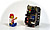
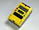

Crickets 
 Crickets/Programmable
Bricks
Crickets/Programmable
Bricks
Cricket software
and reference from MIT Media Lab
- About
Crickets (also, see Research
Papers)
- Tutorials
and Help!
- LogoBlocks
commands reference
- CricketLogo/Jackal
command reference
-
Debugging
/ Troubleshooting
- Latest
LogoBlocks and other software!*
*use pie username & password
- special "NMAH MindFest" version of LogoBlocks with
additional threshold blocks
->Readme
file
PC
version
Mac
OS X
Mac
System 9 and below
*use
pie username & password
- Parts
list and ordering info+
+use pie username & password
 Chirp
Chirp
Questions about Crickets? Join
the discussion...
- Latest
discussions
- Search
Chirp
- MIDI
reference charts
 return to top
return to top |
|
Evaluation
- CCT
Evaluation for PIE NSF grant by Center
for Children and Technology
 CCT Year One Evaluation Report (focus
on Ft. Worth MindFest, plus evaluation plan)
CCT Year One Evaluation Report (focus
on Ft. Worth MindFest, plus evaluation plan)
-in
RTF format
-in
Word doc format
CCT
initial notes from Fort Worth MindFest
return to top
|
|
LEGO RCX 
Commercially-available programmable brick, predecessor of MIT Cricket
LEGO Mindstorms official
web site
Programmable Bricks
MIT
Media Lab site - includes LEGO RCX resources (as well as crickets)
-
Logoblocks
for RCX commands
Creative
Projects with LEGO Mindstorms - Ben Erwin's book
LEGO
User's Group Network (LUGNet) Robotics
Make
your own sensors
Keith
also recommends boarding school in Luxemborg site
with RCX links
return to top
|
|
MindFests
Fort
Worth MindFest (Aug. 01)
CCT
notes
Notes from
PIE staff MindFest debrief meeting
Fort Worth MindFest web site
Fort
Worth's MindFest photos
Karen and Mike's photos
Poul Kattler's
photos
Media Lab photos and video
Teacher involvement in MindFest
MIT
MindFest (Oct. 99)
MIT
MindFest web site
return to top
|
|
NSF Grant
Budget
questions?
Contact Carolyn
Stoeber at MIT Media Lab
NSF PIE Network proposal
NSF PIE Network
proposal (submitted June 2000)
Award
Abstract (link to abstract on NSF site)
NSF Reports
Annual Report to NSF, Year
1
(March-December 2001)
return to top
|
|
PIE Idea Library
Description of PIE Idea
Library from NSF proposal
First prototype PIE
Ideas website
MIDI
PIE pages
return to top
|
|
PIE Network Places
American Visionary Art Museum (AVAM)
Cricket Crazy
Cabaret
Mechanical Theatre
News from Cabaret Mechanical
Theatre
CAMP
(Japan)
What's
new at CAMP
Exploratorium
Exploratorium
PIE Scrapbook
See what Karen and Mike and others have been playfully
inventing at the Exploratorium...
- Inputs
and Outputs chain reactions at the Urban School in San Francisco
- Musical
Ice
- Spirographing
- 1°
Below Zero ice night event
- Edible
Complex
Fort
Worth Museum of Science and History
Fort Worth MindFest web site
Fort Worth's Mindfest
photos
Karen and Mike's Fort
Worth workshop and MindFest photos
MIT Media Lab PIE photos
Poul's Fort
Worth Mindfest photos
Lemelson Center
Invention
at Play exhibition
PIE
Extenders charette from Exploratorium scrapbook
PIE
Exhibit charette from Exploratorium scrapbook
PIE
Exhibit charette video from Keith
Thinking Outside the Box boxes
Windmill
and Whirligig Garden from Exploratorium scrapbook
MIT Media Lab
Photos and video
MIT MindFest
Crickets/Programmable
Bricks
Chirp
Mitchel's ASTC
2001 PIE presentation (large PowerPoint file: 12+Mb)
MIT
Museum
Learning Technologies Scrapbook
MIT Invention
Studio
Inspiring ideas, examples, reflections, and PIE developments
from MIT Museum.
- Monsters
Under Your Bed
- Lightning
Bugs
- Art
on the Screen
- Gastrobots:
Food for Thought
- Sound
Studio
- Sensor
Studio
Science Museum of Minnesota
PIE Journal
From Museum Magnet School students
- Stuff adults
want to know
University of Colorado - Boulder - Craft Technologies Group
Advisors Mike and Ann Eisenberg
Things
that Think class
return to top
|
|
Papers and Presentations
"PIE
Salon" to be held at ASTC
2002 conference
(email Natalie if you're interested in participating)
Mitchel's ASTC
PIE presentation (large PowerPoint
file: 12+Mb!)
Robotic
Invention Studio (PDF format, 2.29Mb)-
Robbie's inventive paper about a course at
Wellesley College incorporating
crickets
 Programmable Bricks Research papers
Programmable Bricks Research papers
MIT research papers on Crickets and other Programmable Bricks
return to top
|
|
Staff Workshops
Wellesley
workshop (Aug. 2000)
Media
Lab photos of Wellesley workshop
Karen and Mike's Fort
Worth workshop photos
Preparing
for Wellesley workshop pages
PIE staff workshop at
Fort Worth (Aug. 2001)
Media
Lab photos and video of staff workshop in Fort Worth
return to top
|
|
Other recommended resources
Articles, books, kits, web sites...
Cabaret Mechanical
Theatre resources
Robotic
Design Studio
Robbie
Berg's course at Wellesley incorporating crickets which culminates
in an exhibition rather than a competition
- Robotic Design Studio
2002
Robots
Find a Muse Other Than Mayhem* - from NY Times, May 30, 2002
Article recommended by Beryl on Art Bots
When
Backyards Were Laboratories* -
from NY Times, May 19, 2002
Article
recommended by Mitchel on how less kids these days spend time tinkering
* may need to register on NY Times to view
return to top
|